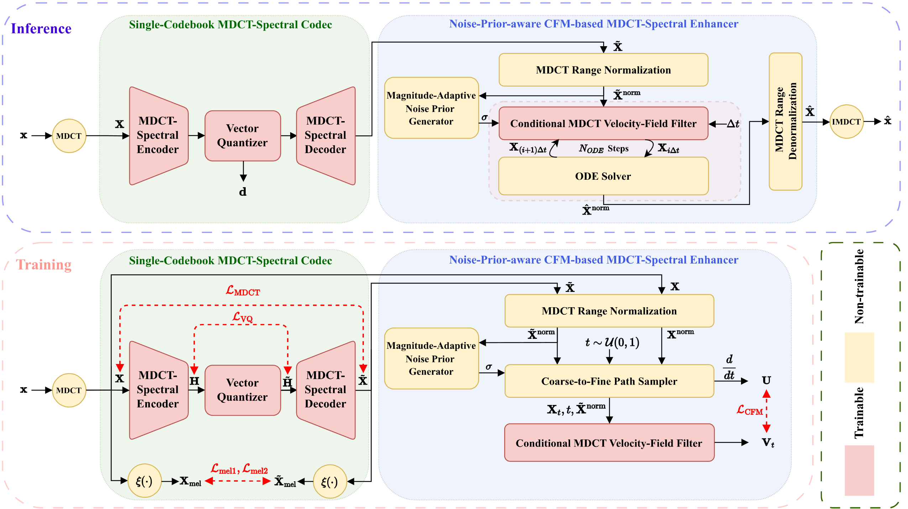
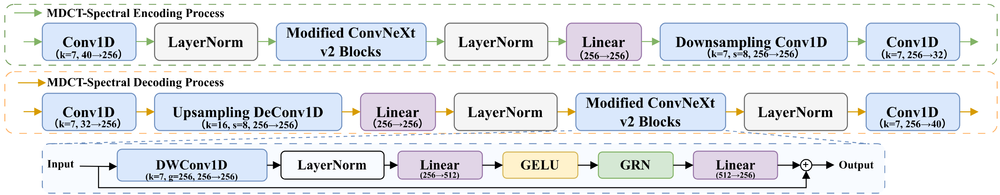
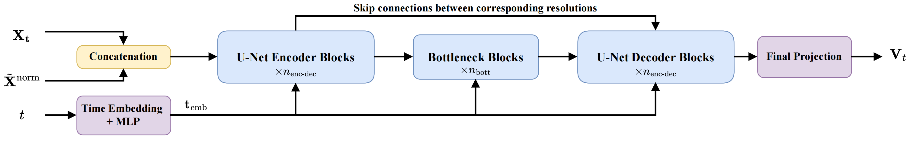

Fig. 1
Overview of the proposed CFMDCTCodec.
Audio Demo
This demo page presents representative speech samples across 16 kHz and 48 kHz settings, with direct side-by-side listening for the reference signal and six codec systems.
The goal is simple: make it easy to compare perceptual quality across codecs and bitrates without the extra scaffolding of a formal listening test page.
CFMDCTCodec: A Low-Bitrate Neural Speech Codec with Noise-Prior-aware Conditional Flow Matching for MDCT-Spectral Enhancement
Xiao-Hang Jiang, Yang Ai, Hui-Peng Du, Zhen-Hua Ling, and Ji Wu
Systems
Each clip below includes the original reference together with six comparison systems.
Baseline MDCT codec output.
DAC baseline output.
BigCodec baseline output.
WavTokenizer baseline output.
FlowDec baseline output.
The proposed codec used in the paper demo.
Figures
The main model figures from the paper are kept here as a compact visual overview.

Overview of the proposed CFMDCTCodec.

Structures of the MDCT spectral encoder and decoder.

Structure of the conditional MDCT velocity-field filter.